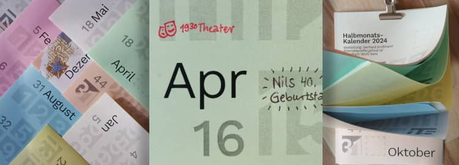

Manches soll nicht gleich in der Timeline versinken …
Auf dieser Website ist Raum für das, wofür meinem Mastodon-Account @charakterziffer zu kurzlebig ist. Mein Blog ist als Plus zu meinen Posts gedacht, eben „@cz+“. // Die letzten drei Artikel:
Vor kurzem habe ich den Krimi „Ich habe ihn getötet“ von Keigo Higashino gelesen. Ein anderes Buch des japanischen Autors, nämlich „Verdächtige Geliebte“, hatte ich als Hörspiel gehört und war neugierig, ob er seine Geschichten immer so schlau konstruiert. Ich wurde nicht enttäuscht!
Keigo Higashino legt seine Krimis wie ein komplexes Rätsel an. Er beginnt nicht mit dem Mord, sondern mit einer sorgfältigen Hinführung, in der er die Figuren und ihre Beziehungen vorstellt. Wie bei einem klassischen Theaterstück bewegt sich die Geschichte allmählich auf den Höhepunkt zu, also dem Mord. Erst anschließend entwirrt der Autor die Motive und Möglichkeiten – und zwar mit vielen Wendungen und doppelten Böden.
Auch bei „Ich habe ihn getötet“ ist es nicht so, wie es am Anfang scheint. Die Geschichte ist in der Ich-Perspektive aus Sicht der drei Hauptverdächtigen erzählt, die natürlich genau die Details verschweigen, die sie als Täter:in erscheinen lassen könnten. Doch Kommissar Kaga kommt immer wieder unvermittelt zu Besuch, konfrontiert die Verdächtigen mit klugen Fragen, zieht zwischen den Zeilen seine Schlussfolgerungen und am Ende … lässt er uns als Leser:innen im Regen stehen.
Der Mörder ist … wer?
Der Kniff bei diesem Buch ist nämlich, dass man nicht direkt verraten bekommt, wer nun des Mordes überführt ist. Stattdessen sind hinten einige Extra-Seiten eingefügt, in denen ein Kenner des Krimi-Genres Hinweise zur Lösung gibt, Textstellen zum Nachblättern anführt und stückweise enthüllt, wie dieses Rätsel zu lösen ist. Die eigentliche Antwort muss man aber selbst finden.
Nachdem ich das Buch ausgelesen hatte, habe ich noch eine ganze Weile darüber nachgedacht, gerätselt, es von vorne nochmal überflogen und Details gesucht. Schließlich war ich mir zu ca. 95 Prozent sicher, den/die Täter:in zu kennen.
Man könnte kritisieren, dass diese Krimi-Konstruktion ziemlich abwegig und nicht sehr realistisch ist … für mich ist das völlig in Ordnung. Ich möchte lieber eine genial gebaute Rätselgeschichte lesen als eine durchschnittliche, die dafür so auch in Echt passieren könnte.
Bücher zu verschenken
So wie viele meiner Bücher habe ich auch „Ich habe ihn getötet“ über Bookcrossing bekommen, einer weltweiten Gemeinschaft zum Büchertauschen. Vom gleichen Autor hat mir eine weitere Bookcrosserin „Böse Absichten“ zugeschickt. Beide Bücher haben mir sehr gut gefallen und ich würde mich freuen, wenn sie nicht bei mir im Regal verstauben. Wer Interesse an einem der Krimis hat, melde sich gerne bei mir oder schreibe einen Kommentar unter diesem Artikel.
Täglich knapp 8 cm² Platz für Termine; gut erkennbare Zahlen; zwei bis drei Wochen in der Übersicht und trotzdem handlich in DIN A5 – seit Jahren gestalte ich meinen Jahreskalender selbst. So muss ich mir auch nicht die völlig übernutzte Helvetica anderer Wandkalender angucken, sondern habe ein typografisch frisches Design.

Diesmal habe ich für meinen Halbmonatskalender die Schriftart Work Sans von Wei Huang ausgewählt. Wer den Kalender verwenden möchte, kann das PDF herunterladen und ausdrucken, die Blätter halbieren und sortieren. Beim Zusammenhalten der Blätter vertraue ich wieder auf eine Vielzweckklammer („Foldback-Klammer“). Alternativ: Im Copy-Shop eine Spiralbindung anbringen lassen, die Blätter an der oberen Kante leicht zusammenleimen oder jede Seite mittig lochen und alles an einen Nagel hängen.
Falls euch das Kalenderformat gefällt, bitte weiterempfehlen (ihr wisst, wie das geht). Er steht unter einer Creative-Commons-Lizenz mit Namensnennung, nicht kommerzieller Nutzung und Weitergabe unter gleichen Bedingungen (CC BY-NC-SA). Wer den Kalender bearbeiten möchte (beispielsweise die optionalen Feiertage aufs eigene Bundesland anpassen), schreibe mich einfach an oder hinterlasse hier einen Kommentar. Dann verschicke ich gerne die SVG-Dateien.
Im Laufe des Lebens macht man Erfahrungen, die immer mal wieder auftauchen. Und man entdeckt bestimmte Verhaltensweisen oder Antworten darauf, die sich über die Zeit recht gut bewähren. Drei meiner gelernten Grundsätze möchte ich hier teilen und hoffe, dass sie auch euch nützlich sein können.
Schimpfen hilft
Statt Dinge in sich hineinzufressen ist es sehr gut, seinem Ärger Luft zu machen. Manchmal merken Leute gar nicht, dass sie einem gerade ziemliche Probleme bereiten, dass ihr Verhalten viele andere nervt und dass es einfach auch anders geht. Kurzes Schimpfen lässt Dampf ab, wenn etwas nicht wie geplant gelaufen ist und hilft, unveränderliche Dinge annehmen zu können.
Was damit nicht gemeint ist: Zornerfüllte Wutausbrüche, andere Leute respektlos beleidigen, andauerndes Gemecker. Falls jemand anderes betroffen ist, darf dieser durchaus den Ärger spüren, aber es muss immer um die Sache und nie gegen die Person gehen! Wir sind alle nur Menschen und meiner Erfahrung nach bemühen sich die meisten, dass es für alle irgendwie funktioniert.
Nimm dir so viel wie du brauchst – aber auf keinen Fall mehr
Niemand traut sich das letzte Schnittchen vom Buffet zu nehmen und du hättest noch Hunger? Diese Jeans im Schaufenster sieht wirklich gut aus, aber irgendwie hast du eigentlich schon genug Hosen daheim im Schrank? Diese kleine Weisheit kann dir dabei helfen, höfliche Zurückhaltung abzulegen, aber auch sorgsam mit Ressourcen umzugehen. Überlege, ob das erwählte Ding dir wirklich etwas bringt oder ob du eigentlich ganz gut ohne es auskommst.
Was damit nicht gemeint ist: Sich selbst immer wieder Nachteile zu bescheren, indem man auf Dinge verzichtet, die einem zustehen und die man auch wirklich brauchen kann (man vergesse beim Verzicht nie den ersten Teil des Satzes).
Es sind erwachsene Leute
Selbst, wenn das Zusehen manchmal weh tut, man es selbst besser machen könnte oder man am liebsten eingreifen würde, wenn jemand dabei ist eine große Dummheit zu begehen … Manchmal sollte man sich einfach zurückhalten. Jeder Mensch hat das Recht, seine eigenen Fehler zu machen. Solange niemand Drittes dadurch größeren Schaden nimmt, ist man nicht verpflichtet, andere Leute immer vor sich selbst zu schützen – sie sind schließlich erwachsen und müssen selbst Verantwortung für ihr Handeln übernehmen. Vielleicht lernt mancher mehr, wenn er mal ordentlich daneben tritt.
Kombinieren lässt sich diese Weisheit mit „Man kann nur jemanden helfen, der sich auch helfen lässt“ – wobei es Grenzfälle gibt und ich persönlich gerade mit so einem Zweifelsfall zu tun habe.
Was nicht gemeint ist: Nur auf seinen Vorteil zu gucken und andere grundsätzlich ins offene Messer laufen zu lassen. Und das gilt vermutlich für alle Prinzipien: Bei jeder Regel gibt es Ausnahmen. Wer sich nur nach festen Grundsätzen richtet, handelt in vielen Fällen unmenschlich und gnadenlos.
Das Wort kombiniert Persönlichkeit (Charakter) mit Sachlichem (Ziffer). Zusammengesetzt ergibt sich ein Synonym für Mediävalziffer, eine Zahlenvariante mit Ober- und Unterlängen.
Schriftarten dieses Blogs
Wenn dein Browser eingebettete Schriften (WOFF2) unterstützt, dann liest du die Fließtexte hier in der Source Sans Pro von Paul D. Hunt, erschienen 2012 bei Adobe.
Die Überschriften sind aus der czSlab gesetzt, die ich für dieses Blog gestaltet habe. Sie orientiert sich an Yanones viel ausgefeilterer Antithesis von 2014.
§ 1 Externe Links · Dieses Blog verlinkt auf Websites Dritter. Zum Zeitpunkt der erstmaligen Verlinkung waren dort keine Rechtsverstöße ersichtlich. Da ich keinen Einfluss auf fremde Websites habe, kann ich für deren Inhalte und Gestaltung keine Haftung übernehmen. Sollte ich von Rechtsverstößen erfahren, entferne ich die Verlinkung unverzüglich. Eine ständige Kontrolle der externen Links ist ohne konkrete Hinweise aber nicht zumutbar.
§ 2 Datenschutzerklärung · Mir ist der Schutz deiner Daten sehr wichtig. Deshalb verzichte ich auf Cookies, vermeide möglichst Dienste von Drittanbietern und erhebe so wenige Daten wie es geht. Diese Website kann ohne die Angabe persönlicher Daten genutzt werden.
Die einzige Ausnahme sind Kommentare. Wenn du einen meiner Texte kommentierst, bekomme ich die eingegebenen Daten und eine Zeitangabe per (prinzipiell unsicherer) E-Mail zugestellt. Falls dein Kommentar sachlich zur Diskussion beiträgt, ergänze ich ihn öffentlich sichtbar unter dem entsprechenden Artikel. Dabei sind sämtliche Angaben freiwillig (Name, Website, Mailadresse, Kommentar) – auch anonyme Kommentare sind möglich.
§ 3 Widerspruch gegen Direktwerbung · Die Verwendung meiner Kontaktdaten zur gewerblichen Werbung ist ausdrücklich nicht erwünscht; ich widerspreche hiermit jeder kommerziellen Nutzung und Weitergabe meiner Daten (gemäß § 21 DSGVO). // Über private Fanpost freue ich mich allerdings sehr und antworte darauf mit großem Vergnügen!
 @charak
@charak